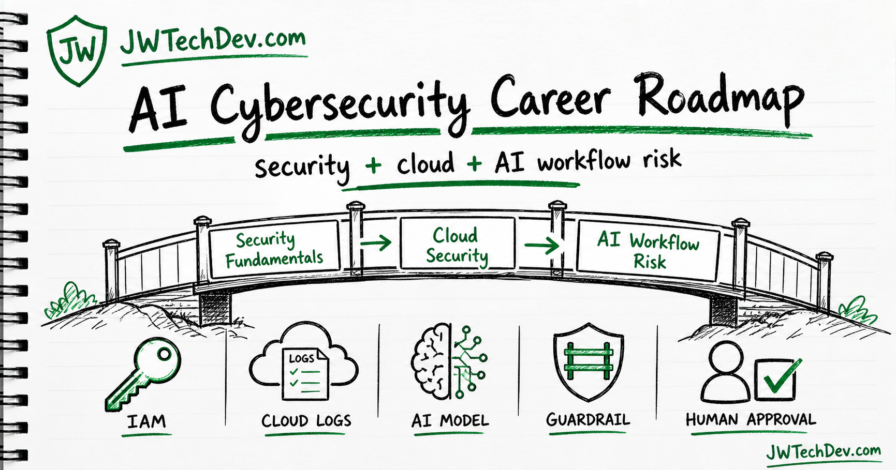

How to move into cybersecurity for AI
This question is normal. A lot of people are looking at AI and thinking, "I do not want to get left behind, but I also do not know where to start." So I went overkill and built a community resource you can actually work through.

Quick answer
If you want to move into cybersecurity for AI, do not start by trying to become an "AI security expert" overnight. Build the bridge: security fundamentals, then cloud security, then AI workflow risk.
Why this question is normal
When people ask how to upskill for AI security, they are usually not asking for a buzzword list. They are asking a more practical question: "What should I learn so I can be useful in the next version of tech work?"
That is a fair question. AI is moving fast, but the useful jobs around AI are not only about prompts or model names. The useful jobs are around systems: identity, data boundaries, logs, approvals, cloud services, cost, and risk.
The money lane is not "I know prompts." The stronger lane is: "I can help a team use AI without leaking data, over-permissioning tools, losing auditability, or letting automation take risky actions without review."
The roadmap
1. Security fundamentals
Start with the basics that still matter when AI is involved: identity, access control, networking, logging, incident response, secrets, vulnerability management, and risk. A beginner certification like Security+ or ISC2 Certified in Cybersecurity can be useful for vocabulary, but the real goal is understanding how systems fail.
2. Cloud security
Most AI workflows will touch cloud services, storage, APIs, logs, queues, databases, serverless functions, or managed AI platforms. That means cloud security is not optional. Learn IAM, least privilege, S3 access boundaries, KMS encryption, CloudTrail, CloudWatch, VPC basics, secrets management, and cost alarms.
3. AI workflow risk
Then layer in AI-specific concerns: prompt injection, sensitive information disclosure, insecure tool access, excessive agency, insecure output handling, model misuse, RAG data exposure, and overreliance on generated output.
Read the OWASP Top 10 for LLM Applications, MITRE ATLAS, and NIST AI RMF. They give you language for the risks instead of forcing you to invent your own framework from TikTok comments and panic.
AWS runbooks you can build
Do not just say you are learning AI security. Build small proof artifacts. These are not production templates. They are learning runbooks you can use to practice the thinking.
AWS IAM and logging baseline
Build the habit of least privilege, audit trails, and cost-aware lab setup before AI touches anything.
Open runbook Runbook 02AI chatbot threat model
Map a basic AI app and identify where prompt injection, data exposure, and insecure outputs can happen.
Open runbook Runbook 03RAG data boundary lab
Practice building a retrieval flow where the main lesson is what the model is allowed to see.
Open runbook Runbook 04Human approval gates
Design an AI workflow where logs, review, and human approval are part of the system from the start.
Open runbookWhat to study next
- IAM: users, roles, policies, permission boundaries, service roles, and least privilege.
- Logging: CloudTrail for API activity, CloudWatch for application logs and metrics, and what you would need during an incident.
- Data boundaries: what data is public, private, sensitive, encrypted, logged, retrieved, or sent to a model.
- AI app risks: prompt injection, excessive agency, insecure output handling, sensitive information disclosure, and tool misuse.
- Governance: NIST AI RMF language: govern, map, measure, and manage.
Updated video script
On-screen hook: Do not chase "AI cyber" first. Build the bridge.
If you feel stuck at work and want to move into cyber for AI, that is a normal question. A lot of people are looking at this new wave and thinking, "I do not want to get left behind, but I also do not know where to start."
So I went overkill and made a community resource for this.
My honest answer: do not start by trying to become an AI security expert overnight. Start with three layers.
First, get solid at security fundamentals: identity, access control, networking, logging, incident response, and risk. Security+ or ISC2 CC is fine for vocabulary.
Second, learn cloud security because most AI systems live in cloud workflows now. IAM, S3 permissions, secrets management, logging, and least privilege matter a lot.
Third, add AI-specific risk: prompt injection, data leakage, insecure tools, model misuse, RAG security, and human approval gates. Read OWASP Top 10 for LLM Apps, MITRE ATLAS, and NIST AI RMF.
The money lane is not "I know prompts." It is: "I can help a company use AI without leaking data, breaking access controls, or letting automation do something dangerous."
Build one small AWS project: a chatbot or AI workflow with authentication, logging, a data boundary, and a threat model. I put runbooks on JWTechDev.com if you want a place to start.
Closer: Cyber for AI is security fundamentals plus cloud plus AI workflow risk. Learn that stack and you will be useful.
Sources checked
Want the starter kit?
Grab the free JWTechDev.com starter kit for cloud, AWS study, AI 101, and launch checklists.
Get resources